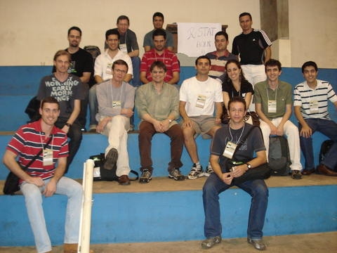

O R Day será realizado no dia 22 de maio de 2018, no Campus III - Centro Politécnico da Universidade Federal do Paraná (UFPR), como um evento satélite da 63ª RBRAS (Reunião anual da Região Brasileira da Sociedade Internacional de Biometria).
O R Day é o primeiro evento no Brasil endossado oficialmente pela The R Foundation.
O objetivo do evento é congregar usuários e desenvolvedores R para um dia de atividades formativas e informativas sobre o ambiente R.
A comunidade de usuários e desenvolvedores de pacotes R tem crescido em quantidade de usuários e desenvolvedores e têm melhorado em qualidade e contribuições no Brasil e no mundo. A lista brasileira oficial de usuários de R, a R-br, fundada em Março de 2011, possui 1042 membros e um fluxo de 250 mensagens mensais. Além da lista, existe a comunidade de usuários no Stackoverflow em português, grupos de usuários no telegram, blogs nacionais de conteúdo sobre R e páginas de comunidades no Facebook. Também existem vários repositórios mantidos no GitHub e em outros serviços de hospedagem de código fonte com pacotes oficiais, não oficiais e tutoriais.
Isso mostra que a comunidade de R no Brasil é ativa, no entanto, o contato real entre os usuários ainda é restrito à pequenos grupos. Não houve no país, até o momento, um encontro nacional de usuários do R, apesar de todo o crescimento já exposto.
Outros eventos tem reunido usuários de R, como o I Congresso de Aplicações de R em Administração - CARA, que aconteceu eu 2016, mas com um público mais específico.
Durante a 54ª RBRAS, que ocorreu em São Carlos em 2009, houve um pequeno encontro organizado informalmente, através da antiga lista de emails R_STAT, onde já se discutia a possibilidade da criação de encontros regulares. Todos os participantes desse encontro estão na foto abaixo.

O Departamento de Estatística da Universidade Federal do Paraná foi um dos pioneiros no uso do R em instituições de ensino superior, sendo, inclusive, o primeiro espelho nacional de R, mantido até hoje. Desde o início da história do R, são feitas contribuições por professores deste Departamento, contando com a produção de materiais didáticos, pacotes e cursos em congressos sobre a linguagem.
Aproveitando a oportunidade de que a 63ª RBRAS será sediada na UFPR em 2018, estamos organizando este “dia do R”, um evento satélite, com a intenção de promover um encontro entre usuários do R das mais diversas áreas.
Um grande número de participantes da RBRAS contribui para a adoção e divulgação do R em pesquisas científicas. O público participante é composto geralmente por alunos de graduação, pós-graduação e pesquisadores que atuam em diversas áreas como Agronomia, Biologia, Ecologia, Medicina e Economia.
Dessa forma, o público-alvo do evento são os alunos de graduação, pós-graduação, profissionais, usuários de R em geral, de nível básico ou avançado, com interesse em aprofundar conhecimentos em R, participar da comunidade de usuários e contribuir com a socialização e adoção do R.